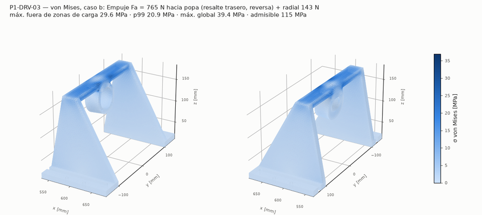
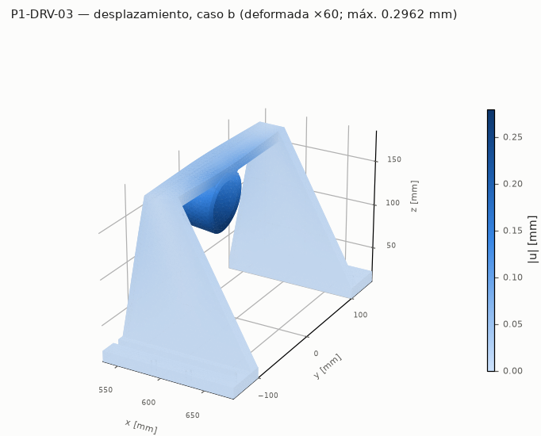
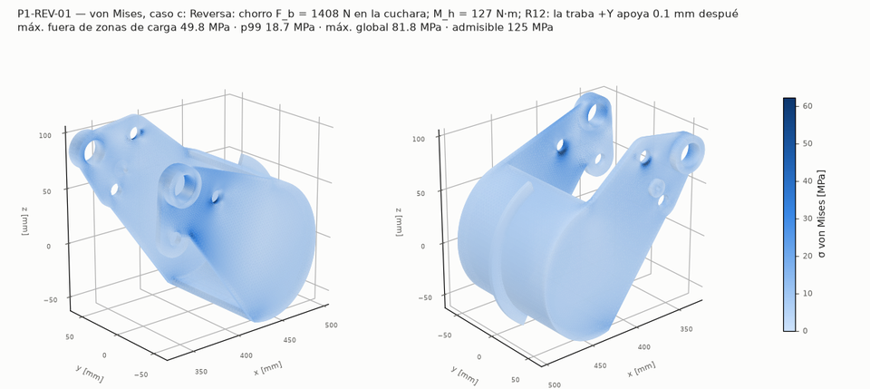
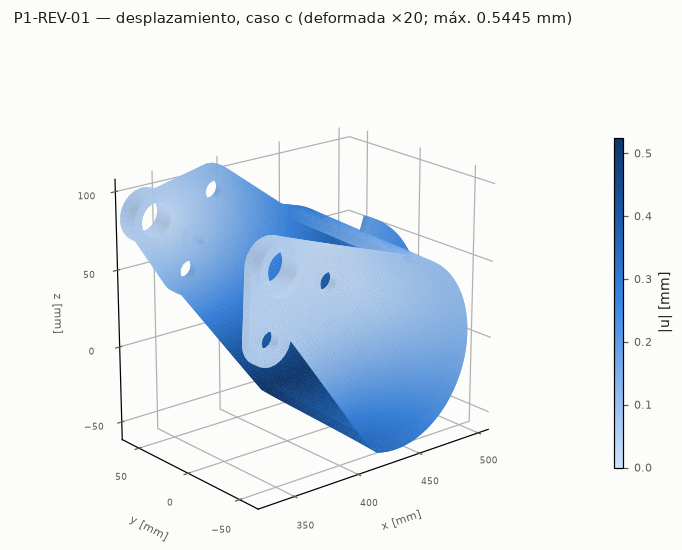
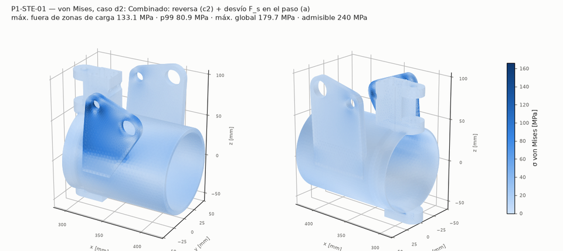
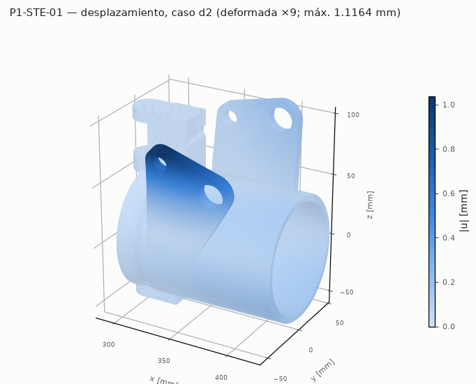
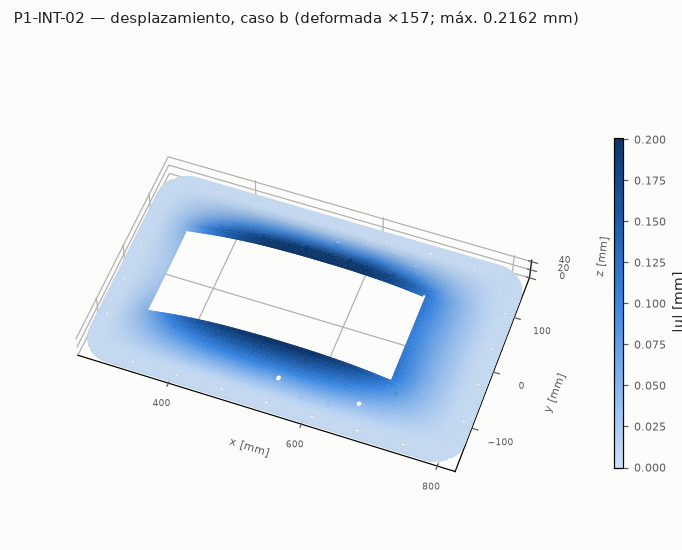

Resultados FEA
Elementos finitos de las piezas críticas
gmsh (STEP/OCC, optimización Netgen) → tetraedros; elasticidad lineal P2 (10 nodos), isotrópico; PCG + precondicionador P2→P1; contacto unilateral por conjunto activo. Corrida del 2026-10-02. Método, cargas, admisibles y comparación con el cálculo a mano: 04_diseno/fea/README. [CALCULADO]
| Pieza | FS mín. / objetivo | Cumple | Caso gobernante | Material |
|---|---|---|---|---|
| P1-DRV-03Pórtico Al 6082 sobre el conducto: alojamiento 2×7204 BECBP, 4×M8 a la placa base | 3,89 / 2 | sí | b Empuje Fa = 764 N hacia popa (resalte trasero, reversa) + radial 143 N | Al 6082-T651 soldado (ZAT) |
| P1-REV-01Bucket de reversa Al 5083 6 mm (cuchara + brazos + nervio), traba en los dos brazos | 2,51 / 2 | sí | c Reversa: chorro F_b = 1408 N en la cuchara; M_h = 127 N·m; R12: la traba +Y apoya 0.1 mm después que la −Y (desfase de fabricación admitido) | Al 5083-O/H111 (= ZAT) |
| P1-STE-01Boquilla direccional con orejas de pivote, torre del yugo y orejas del bucket | 1,80 / 2 | no | d2 Combinado: reversa (c2) + desvío F_s en el paso (a) | Al 6061-T6 |
| P1-INT-02Placa base de la toma Al 5083 10 mm: cuerpo enrasado + ala abulonada al casco, cuña de la rampa, roscas del conducto y del soporte de rodamientos | 2,45 / 2 | sí | b Golpe de fondo 50 kPa + presión de cierre 67 kPa en la abertura + tiro de la brida del conducto 4047 N (placa sola, sin la rigidez del conducto: conservador) | Al 5083-H111 |
| P1-CTL-02Caja PETG de palancas con sensor hall | 3,41 / 3 | sí | a Mano apoyada 150 N, palma Ø50 en (x, y)_U = (-10, 0) mm (nervio entre ranuras); A cargada 847 mm² | PETG |
P1-DRV-03 Pórtico Al 6082 sobre el conducto: alojamiento 2×7204 BECBP, 4×M8 a la placa base
FS 3,89 (objetivo 2) — cumple criterio vm · malla fina
- P1-DRV-03: FS = 3,89 (objetivo 2, cumple); caso b, criterio vm: σ de diseño 29,6 MPa (máx, máx gruesa→fina -0 %) en (590,7; -23,0; 169,5) mm; σvm p99 20,9 MPa (FS p99 5,50). Máximo en la unión del alma central con el alojamiento Ø65 y el tablero (esquina viva, mecanizada o soldada): el empuje excéntrico y el radial entran al tablero por el alma. Cumple; conviene un radio ≥ 3 mm (o cordón de filete) en esa unión.
- ⚠ «Mejillas: empuje Fa a punto fijo en la base (cada una ½ Fa)»: FS mano 112,30 vs FS FEA 6,40 (-94 %). La fila solo mira la flexión de la mejilla en su plano por Fa/2 (sección 12 × 150, muy rígida). El FEA pone el máximo de la mejilla en su unión con el tablero: el tablero cargado por el alojamiento flexiona y arrastra el borde superior de la mejilla fuera de su plano (marco tablero + mejillas). Mecanismo que la fila no ve; nivel bajo.
- ⚠ «Tablero: 3 g vertical del tren + Fr (biapoyado entre mejillas) + Fa excéntrico»: FS mano 6,93 vs FS FEA 4,37 (-37 %). El máximo está en la unión del alma central (columna tablero–alojamiento) con el tablero: el momento de Fa excéntrico y el radial entran al tablero por el alma, con concentración en la esquina viva de esa unión; la viga biapoyada de la fila no la ve. Fila a mano no conservadora, pero el FS sigue sobre 2.
- ⚠ «Alojamiento Ø47: Fa sobre el resalte trasero (reversa) / anillo»: FS mano 80,29 vs FS FEA 25,34 (-68 %). La fila es el corte medio del resalte (τ = Fa/(π·D·t)), un valor nominal; el FEA mide la flexión del resalte como placa anular (el aro apoya solo entre Da_max y D) y la del alojamiento en su unión con el alma. Ambos lejos del admisible.


P1-REV-01 Bucket de reversa Al 5083 6 mm (cuchara + brazos + nervio), traba en los dos brazos
FS 2,51 (objetivo 2) — cumple criterio vm · malla fina
- P1-REV-01: FS = 2,51 (objetivo 2, cumple); caso c, criterio vm: σ de diseño 49,8 MPa (máx, máx gruesa→fina +18 %) en (353,9; -59,5; 36,7) mm; σvm p99 18,7 MPa (FS p99 6,67). Máximo en el brazo +Y junto al agujero de traba (flexión fuera del plano de la chapa de 4 mm) y ≈ 120 MPa en el borde inferior de la cuchara junto al brazo (soldadura). Causa: la traba está en un solo brazo, así que todo M_h pasa por la cuchara (sección abierta) a torsión hasta el brazo +Y (giro de 3,6 mm). Propuesta al dueño de P1-REV-01/04: (1) traba en los dos brazos (segundo émbolo en −Y o perno pasante) — V1 baja la cuchara a < 10 MPa y el giro a 0,2 mm, pero el lóbulo de traba de 4 mm queda en FS 1,3; (2) además brazos (o al menos los lóbulos de pivote y traba) de 6 mm, p. ej. con una arandela de refuerzo soldada — V2 da FS 2,3. Corregir structural_direccion: el brazo con la traba lleva todo M_h, no F_b/2.
- ⚠ «Cuchara como viga entre brazos (bucket R12, corta)»: FS mano 54,32 vs FS FEA 25,49 (-53 %). Misma causa: la fila trata la cuchara como viga entre brazos con los dos extremos apoyados; con la traba de un solo lado la cuchara trabaja a torsión (sección abierta) y su borde inferior junto al brazo (soldadura) concentra.
- ⚠ «Chapa de la cuchara: franja empotrada bajo la presión dinámica (corta)»: FS mano 32,15 vs FS FEA 48,73 (+52 %). La franja empotrada (p_dinámica) no incluye la torsión de la cuchara; el FEA (escalado a p_dinámica/q) mide la tensión total de la chapa, dominada por esa torsión. Con traba en los dos brazos (V1) la cuchara baja a < 10 MPa.
- ⚠ «Chapa de la cuchara: franja (fatiga de soldadura, 1e5)»: FS mano 17,49 vs FS FEA 26,51 (+52 %). La franja empotrada (p_dinámica) no incluye la torsión de la cuchara; el FEA (escalado a p_dinámica/q) mide la tensión total de la chapa, dominada por esa torsión. Con traba en los dos brazos (V1) la cuchara baja a < 10 MPa.
- ⚠ «Cuchara abierta a torsión con un solo brazo trabado (FALLA: un émbolo no entró; reversa sizing)»: FS mano 2,58 vs FS FEA 5,46 (+112 %).
- ⚠ «Agujero de traba: aplastamiento del brazo con M_h completo (émbolo Ø12, R12)»: FS mano 3,20 vs FS FEA 9,89 (+209 %). La fila es la presión media de aplastamiento F/(d·t); el FEA promedia σvm en un anillo de 3 mm: por definición menor que el pico. Coinciden en el orden de magnitud; el pico local (fuera de r_excl) es el que no cumple.


P1-STE-01 Boquilla direccional con orejas de pivote, torre del yugo y orejas del bucket
FS 1,80 (objetivo 2) — NO cumple criterio vm · malla fina
- P1-STE-01: FS = 1,80 (objetivo 2, NO CUMPLE); caso d2, criterio vm: σ de diseño 133,1 MPa (máx, máx gruesa→fina +11 %) en (329,5; -44,0; 77,6) mm; σvm p99 80,9 MPa (FS p99 2,97). El pico global (≈ 200 MPa) está en la arista viva donde la oreja de pivote corta el labio de entrada (x = X_pivote, sin radio en el CAD, con astillas de malla) y no converge: se usa el promedio en volumen y el máx* convergido de cada región. Gobierna la oreja del bucket +Y sobre la rosca M20 de la traba (ligamento de ~5 mm hasta el contorno de la oreja), con la reversa. Cumple; un radio de 1–2 mm en la arista oreja/labio quitaría la singularidad.
- ⚠ «Flexión del tubo por el desvío del chorro (fatiga, sizing)»: FS mano 145,87 vs FS FEA 13,47 (-91 %). La fila trata el tubo Ø101 como viga (σ nominal < 1 MPa). En el FEA el máximo de la región del tubo está donde se le unen la torre y la oreja de pivote superior (entra el par del yugo y la reacción de los pernos): concentración local que la viga no ve. Nivel bajo (FS > 10).
- ⚠ «Oreja del bucket: flexión en su plano (bucket R12, corta; pivote + traba, M_h completo en una traba)»: FS mano 4,58 vs FS FEA 1,93 (-58 %). La fila carga cada oreja con F_b/2 a 52 mm. Con la traba la oreja +Y recibe además la fuerza del émbolo (≈ 2,8 kN en la rosca M20, a 45 mm del pivote) y el pivote +Y toma más que el −Y; el máximo está en el lóbulo de la traba.
- ⚠ «Oreja del bucket: flexión (reversa sizing, fatiga; reparto máx. entre trabas)»: FS mano 5,01 vs FS FEA 1,46 (-71 %). La fila carga cada oreja con F_b/2 a 52 mm. Con la traba la oreja +Y recibe además la fuerza del émbolo (≈ 2,8 kN en la rosca M20, a 45 mm del pivote) y el pivote +Y toma más que el −Y; el máximo está en el lóbulo de la traba.
- ⚠ «Oreja del bucket: ligamento de la rosca M20 de la traba (M_h completo en una traba, R12)»: FS mano 3,94 vs FS FEA 1,93 (-51 %).
- ⚠ «Oreja del bucket: flexión fuera del plano por el pivote en voladizo (R12, reparto máx.)»: FS mano 4,55 vs FS FEA 1,93 (-58 %). La fila carga cada oreja con F_b/2 a 52 mm. Con la traba la oreja +Y recibe además la fuerza del émbolo (≈ 2,8 kN en la rosca M20, a 45 mm del pivote) y el pivote +Y toma más que el −Y; el máximo está en el lóbulo de la traba.
- ⚠ «Oreja de pivote (dentro de la de la bomba): flexión de la raíz»: FS mano 103,14 vs FS FEA 10,15 (-90 %). La fila toma F/2 a 12 mm en 25 × 30. En el FEA los pernos de pivote reciben un par (reacciones opuestas en la mejilla Ø8 y en la rosca M6) porque el bucket empuja muy por encima del eje, y el máximo está en la arista viva donde la oreja cilíndrica corta el frente esférico (sin radio en el CAD; zona con astillas de malla).


P1-INT-02 Placa base de la toma Al 5083 10 mm: cuerpo enrasado + ala abulonada al casco, cuña de la rampa, roscas del conducto y del soporte de rodamientos
FS 2,45 (objetivo 2) — cumple criterio vm · malla fina
- P1-INT-02: FS = 2,45 (objetivo 2, cumple); caso b, criterio vm: σ de diseño 51,1 MPa (máx, máx gruesa→fina +7 %) en (525,6; 149,4; 10,0) mm; σvm p99 30,0 MPa (FS p99 4,16). Gobierna el golpe de fondo con la placa sola (b): máximo en la cara superior sobre el borde del apoyo del ala (unión cuerpo–ala), convergido. Con el conducto como rigidizador (b2) baja a ≈ 18 MPa. Los avellanados M8 del pórtico: σvm promedio bajo el cono ≈ presión de la fila a mano.
- ⚠ «Paño lateral entre bulones del conducto y del ala: golpe de fondo»: FS mano 106,56 vs FS FEA 6,85 (-94 %). La fila apoya el paño en la línea de bulones del conducto (luz 68 mm a lo ancho). Placa sola (b): sin el conducto, la franja entre la abertura y el ala trabaja a lo largo y el máximo sale en la unión cuerpo–ala; es la cota conservadora. Con el conducto rígido (b2) se recupera el modelo de la fila; la realidad está entre ambos.
- ⚠ «Paño lateral entre bulones del conducto y del ala: golpe de fondo»: FS mano 106,56 vs FS FEA 2,45 (-98 %). La fila apoya el paño en la línea de bulones del conducto (luz 68 mm a lo ancho). Placa sola (b): sin el conducto, la franja entre la abertura y el ala trabaja a lo largo y el máximo sale en la unión cuerpo–ala; es la cota conservadora. Con el conducto rígido (b2) se recupera el modelo de la fila; la realidad está entre ambos.
- ⚠ «Arranque de la cabeza M8 a través de la placa (tapón de Ø dk sobre el cono)»: FS mano 2,94 vs FS FEA 5,54 (+89 %). La fila usa τ media en el cilindro Ø dk × (t − h_cono) suponiendo que todo el tiro pasa por corte puro. En el FEA la compresión de la zapata sobre la cara superior equilibra la precarga en el mismo lugar y el cilindro no está en corte puro: el promedio de σvm en ese volumen es menor. Fila conservadora.


P1-CTL-02 Caja PETG de palancas con sensor hall
FS 3,41 (objetivo 3) — cumple criterio vm · malla fina
- P1-CTL-02: FS = 3,41 (objetivo 3, cumple); caso a, criterio vm: σ de diseño 7,0 MPa (máx, máx gruesa→fina +2 %) en (1820,6; -108,8; 674,0) mm; σvm p99 2,9 MPa (FS p99 8,34). Gobierna σZ (tracción entre capas, Z de impresión = z): la tapa cargada gira en sus bordes y flexiona las paredes de 3,5 mm, con la cara exterior a tracción vertical justo bajo la tapa. La fila a mano (franja de tapa) no lo ve; la tapa en sí da FS ≈ 3,3. Propuesta al dueño de P1-CTL-02: paredes de 5 mm (V1: FS 3,5) engrosadas hacia afuera para no mover el entrehierro del sensor hall; una tapa de 8 mm (V2) exige subir ZT para conservar la luz sobre el cubo. Además la pieza real es 5 perímetros + 30 % giroide (solid_frac 0,55): el FEA macizo es optimista.
- ⚠ «Tapa PETG 6 mm: mano apoyada 150 N [SUPUESTO] (corta)»: FS mano 3,84 vs FS FEA 5,51 (+44 %). La fila es una franja 50 × 6 apoyada con luz 50; la tapa real está casi toda ranurada (ranuras de las palancas), y la palma carga el nervio de 6 mm entre las dos ranuras o la tapa angosta junto a la del bucket. Ver σZ: la flexión de las paredes cruza capas.